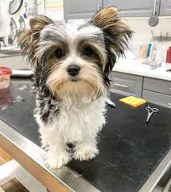
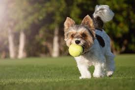

Health and Nutrition
Overview
The Biewer Yorkie, a small but energetic toy breed, requires a well-balanced diet to maintain optimal health. High-quality dog food, rich in protein, healthy fats, and essential vitamins, is crucial for supporting their fast metabolism and maintaining a shiny coat. Because they are prone to hypoglycemia, especially as puppies, feeding them small, frequent meals throughout the day helps regulate their blood sugar levels. Including omega-3 and omega-6 fatty acids in their diet can also promote healthy skin and fur. Additionally, ensuring they receive adequate hydration is vital to support kidney function and overall well-being.
In terms of general health, Biewer Yorkies can be prone to genetic conditions such as patellar luxation, dental issues, and liver shunts. Regular veterinary check-ups, along with proper dental care like brushing and dental treats, can help prevent common oral health problems. Due to their small size, they are also susceptible to injury, so a safe environment and gentle handling are essential. Moderate exercise, such as short walks and interactive play, helps keep them fit without putting too much strain on their delicate joints. With a proper diet, routine vet visits, and regular exercise, a Biewer Yorkie can enjoy a long, happy, and healthy life.  